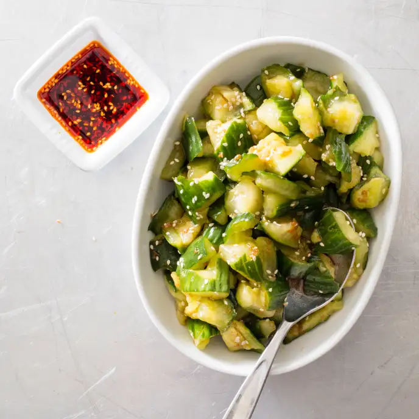

Sichuan Smashed Cucumbers

Ingredients:
- 2 (14-ounce) English cucumbers
- 1 ½ tsp kosher salt
- 4 tsp Chinese black vinegar
- 1 tsp garlic, minced to paste
- 1 tbsp soy sauce
- 2 tsp toasted sesame oil
- 1 tsp sugar
- 1 tsp sesame seeds, toasted
Directions:
- Trim and discard ends from cucumbers.
- Cut each cucumber crosswise into three equal lengths.
- Place pieces in large zipper-lock bag and seal bag. Using small skillet or rolling pin, firmly but gently smash cucumbers until flattened and split lengthwise into 3 to 4 spears each.
- Tear spears into rough 1- to 1 1/2-inch pieces and transfer to colander set in large bowl.
- Toss cucumbers with salt and let stand for at least 15 minutes or up to 30 minutes.
- Whisk vinegar and garlic together in small bowl; let stand for at least 5 minutes or up to 15 minutes.
- Whisk soy sauce, oil, and sugar into vinegar mixture until sugar has dissolved. Transfer cucumbers to medium bowl and discard any extracted liquid. Add dressing and sesame seeds to cucumbers and toss to combine.
- Serve immediately.